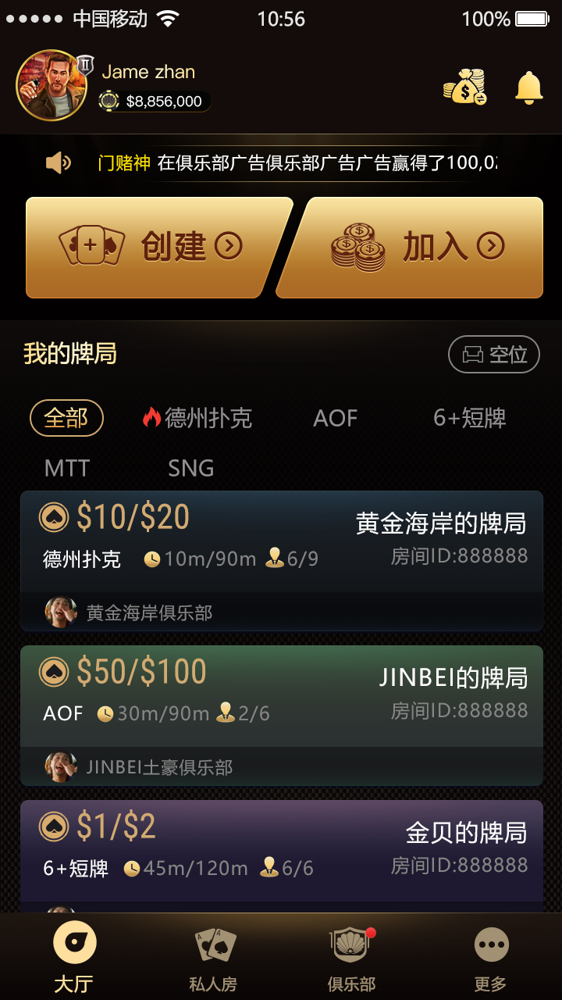
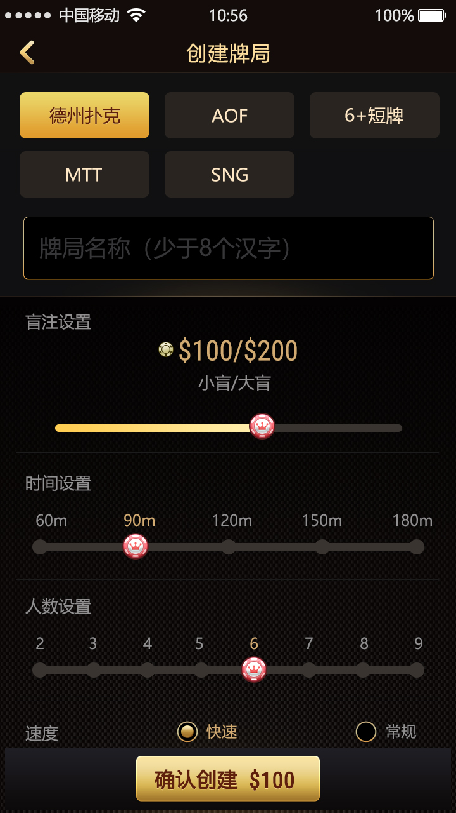
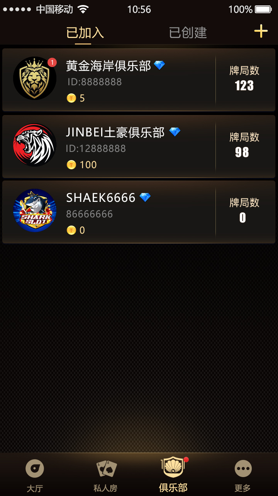
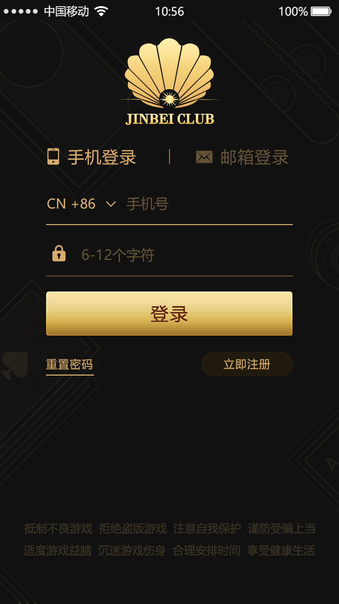
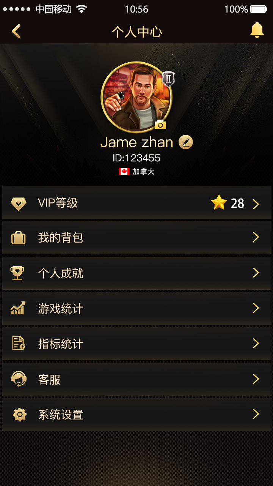
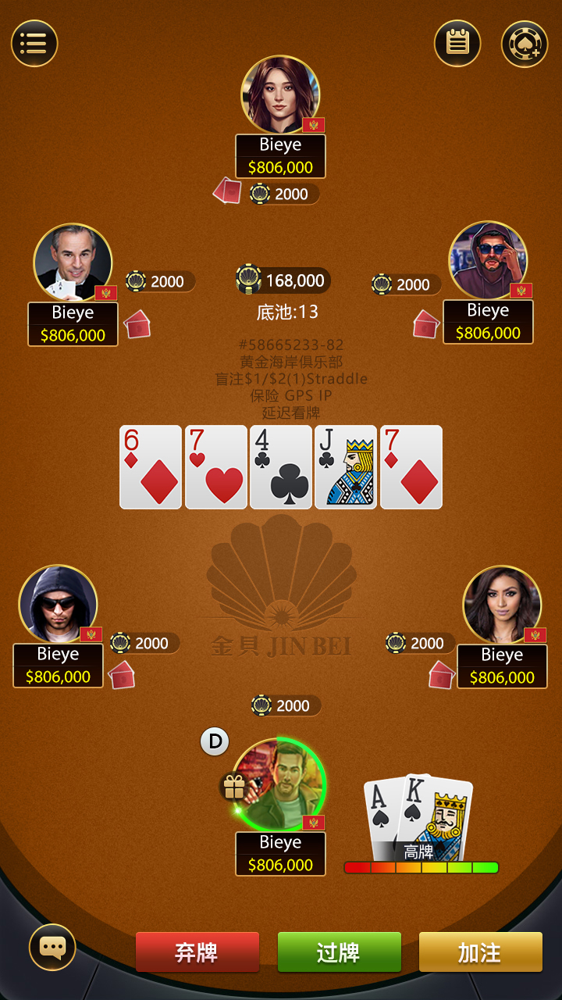

篩選玩法與房間
可見經典德州、AOF、6+ 短牌、MTT、SNG，以及盲注、時間與座位資訊。
玩家流程
產品介面連接帳戶入口、大廳篩選、私人牌局、俱樂部與即時桌；程式碼可核實內容和截圖入口分開說明。
可見經典德州、AOF、6+ 短牌、MTT、SNG，以及盲注、時間與座位資訊。
設定玩法、盲注、60–180 分鐘、2–9 人和快速/一般節奏。
建立俱樂部或依 ID 加入，查看俱樂部標識、幣值和目前牌局數。

大廳探索
大廳同時呈現玩法、盲注、持續時間、座位數和俱樂部歸屬。

私人牌桌

俱樂部體系
俱樂部清單展示名稱、ID、幣值與牌局數；另一頁面提供建立或依 ID 加入入口。
程式碼證據
公開目錄直接提供牌局階段、牌桌恢復、客戶端/房間訊息、下注協定與推送介面。
開局、前注、莊家、底牌、公共牌、轉牌、河牌與結束。
目前階段、玩家動作、下注、可見牌與剩餘操作時間。
盲注、買入、動作、底池、發牌、紀錄與計時訊息。
客戶端/房間請求以及單人、全桌和觀察者廣播。
登入、個人中心與牌桌截圖補充完整使用者路徑。



Telegram：@xuzongbin001 Email：masterai918@gmail.com
公開目錄未驗證 Docker 部署、資料庫初始化、固定併發能力或每個截圖玩法的完整實作。部署前請核實依賴、授權、安全與地區合規，不得用於非法賭博。